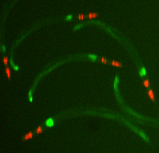
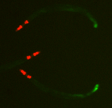

Broad Bioimage Benchmark Collection
Annotated biological image sets for testing and validation
C. elegans infection marker
Accession number BBBC012 · Version 1
Example images
-
Positive: pmk-1(km25)
-
Negative: wild type
Biological application
This selection of images show transgenic C. elegans expressing the promoter of gene clec-60 fused to GFP. The clec-60 gene is up-regulated during S. aureus infection [Irazoqui et al. PLoS Path 2010]. GFP expression is constrained to the posterior intestinal cells of wild type worms (wt, negative control), while the mutant (positive control), pmk-1(km25) is defective in the p38 MAPK homolog PMK-1 and often has elevated expression of clec-60p:GFP in the anterior intestine close to the pharynx, which is labeled with the red fluorescent mCherry.
Images
The images were acquired at MGH on using a Discovery-1 microscope (Molecular Devices), with one image per channel (Channel 1 = brightfield, Channel 2 = GFP, Channel 3 = mCheery). Original image size is 696 x 520 pixels. Images are available in 16-bit TIF.
BBBC012_v1_images.zip (117 MB)
Ground truth B
The images provided are 1 replicate (48 images) of each of the two controls (positive, pmk-1, and negative, wt). Images of the pmk-1 mutant images are in the folder entitled "pmk_plate2" and wt worms are in the folder entitled "WT_plate2".
For more information
These images were originally aquired by Javier Irazoqui's lab at MGH. Please contact javier 'at' molbio.mgh.harvard.edu for more information.
Published results using this image set
| Z'-factor | Citation |
|---|---|
| 0.21 | Wählby et al., Nat Meth, 2012 |
Recommended citation
"We used image set BBBC012v1 provided by Javier Irazoqui, available from the Broad Bioimage Benchmark Collection [Ljosa et al., Nature Methods, 2012]."